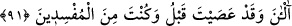

düşmanlık etmek için demektir.” “onların peşine düştü.” Nihayet iki grup birbirlerini
gördü, neredeyse birleşeceklerdi.
Bu hâdise şöyle olmuştur: Musa (a.s.) İsrâiloğulları’nı, Mısır’dan Fir’avn’un habersiz
olduğu bir sırada çıkardı. Bunu duyan Fir’avn da onların peşine düştü ve onlara yetişti.
Onlar denizden çıkmışken sahile vardı. Onların denizden geçtikleri yol hala kuru
olduğundan bütün ordusuyla birlikte bu yola girdi.
Kaşifî der ki: “Denizin kenarına ulaştıklarında ve Fir’avn’un atı Cebrail (a.s.)’ın
bindiği kısrağın kokusu sebebiyle denize girdi, askerleri de onun peşine düştüler. Hepsi
denize girdi. Aslında Fir’avn denize girmek istemiyordu. Fakat bindiği hayvan onu
denize alıp götürdü.”
Fir’avn ordusunun son kısmı denize girip öncü birlikleri denizden çıkmak üzereyken
deniz onları kapladı.
“Boğulacağı anda” yani deniz kendisini yakalayıp sürüklediğinde ve kuşattığında
“Fir’avn: “Gerçekten İsrailoğulları’nın inandığından başka” yani Musa’nın dâvet
ettiğinden başka ibâdete lâyık “tanrı olmadığına inandım.” dedi.
Fir’avn, büyücülerin: “Âlemlerin Rabb’ine, Musa ile Harun’un Rabb’ine
inandık.” (eş-Şuarâ, 26/48) dedikleri gibi demeyip bilakis İsrailoğulları’nın
inandığından başka tanrı olmadığını söylemiştir. Bu onun isyandan döndüğünü ve
kendisine tâbî kılmaya çalıştığı kişilere artık kendisinin tâbî olduğunu göstermek içindir.
Bunu da tevbesinin kabulüne ve onlarla birlikte kurtuluşa erenler zümresine girmeyi
arzu ettiği için yapmıştır. Nitekim el-İrşad’da böyle geçmektedir.
Fakir (Bursevî) der ki: Aslında bu yüzüstü bırakılan (Fir’avn)un sözünde bir taklid
kokusu vardır. Bu sebeple îmânı kabul edilmemiştir. Hakikaten îmânın ipine sarılsaydı
“Kendisinden başka ilah olmayan Allah’a inandım.” derdi.
“Ben de” kendilerini Allah’a teslim eden, yani sadece O’na teslim olmuş ve O’na
karşı samimi olan “müslümanlardanım.” dedi.”
91. Şimdi mi? Oysa daha önce isyan etmiş ve bozgunculardan olmuştun.
“Şimdi mi?” yâni Fir’avn böyle deyince ona denildi ki: ‘Şimdi yaşamaktan ümidini
kesip öleceğine kesin olarak anlayınca mı inanıyorsun?’ “Oysa daha önce” Yani, bütün
ömrün boyunca “isyan etmiş ve bozgunculardan” yani dalâlete ve îmândan saptırmaya
dalıp gidenlerden “olmuştun.” Birinci ifade, sadece Fir’avn’a mahsus bulunan
isyandan bahsederken, ikinci ifade hem kendisini ilgilendiren hem de başkalarına ulaşan
zulüm, hakka tecavüz ve İsrailoğulları’nı inanmaktan çevirmek şeklinde tezahür eden
bozgunculuktan bahsetmektedir.